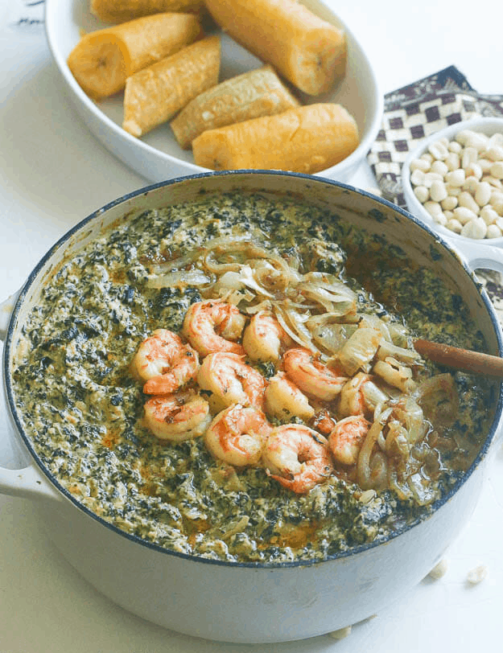

Notre histoire chez Kamerfood
Tout commence dans une cuisine familiale de Douala, autour d'une marmite de ndolè et d'une envie simple : faire goûter le Cameroun tel qu'on le mange à la maison.
Aujourd'hui, notre équipe prépare chaque jour les grands classiques du pays — du Littoral au Grassfields — avec les mêmes gestes, les mêmes épices et la même générosité.
Découvrir le menu
9
plats traditionnels au menu
100%
ingrédients frais du marché
30 min
livraison moyenne à Douala
Authenticité
Pas de raccourci : huile de palme rouge, njangsa, feuilles fraîches et cuissons lentes.
Hospitalité
On sert comme on reçoit chez soi : portions généreuses et sourire garanti.
Régularité
Le même goût à chaque commande, préparé par la même équipe depuis le début.